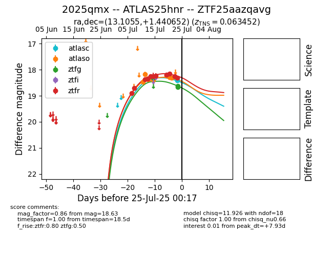

Target 2025qmx at 2025-07-25 00:17, see:
FINK: fink-portal.org/2025qmx
Lasair: lasair-ztf.lsst.ac.uk/objects/2025qmx
ALeRCE: alerce.online/object/2025qmx
TNS: wis-tns.org/object/2025qmx
YSE: ziggy.ucolick.org/yse/transient_detail/2025qmx
alt names
ZTF25aazqavg (ztf,fink)
2025qmx (tns,yse)
ATLAS25hnr (atlas)
coordinates:
equatorial (ra, dec) = (13.1055,+1.44065)
galactic (l, b) = (123.4461,-61.43011)
photometry
last atlasc=18.41, atlaso=18.32, ztfg=18.63, ztfr=18.31
1 atlasc, 7 atlaso, 3 ztfg, 11 ztfr detections
